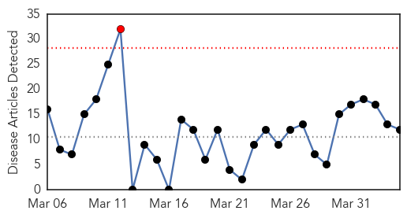
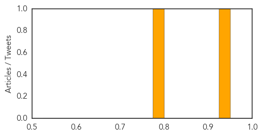

Influenza
30-Day Web Trend
1 alerts, 0 warnings

30-Day Twitter Trend
0 alerts, 0 warnings
Article Locations

Article Confidences

Top Articles:
- 0.986
- Visitor restrictions lifted at all Banner Health facilities
- 0.972
- HP Avian Influenza In SD: Questions And Answers
- 0.935
- Circulation of Highly Pathogenic Avian Flu in North American Birds
- 0.896
- H5N2 detected again in Minnesota, Montana
- 0.895
- Fifth farm infected with bird flu; migrating waterfowl may be cause
- 0.888
- State issues norovirus warning in southeastern Idaho
- 0.862
- Turkey Growers director: H5N2 virus poses no food safety, health risk - MarshallIndependent.com
- 0.806
- Officials urge precaution as dog flu outbreak hits Chicago
- 0.751
- April 4, 2015 Archives
- 0.751
- April 3, 2015 Archives
- 0.751
- April 3, 2015 Archives
- 0.717
- Increased Vigilance for Bird Flu Encouraged for Hawaii Poultry and Bird Owners
Top Tweets:
- 0.574
- Two DNA Aptamers against Avian Influenza H9N2 Virus Prevent Viral Infection in Cells http://t.co/uBj2QBmY1I
Meningitis
30-Day Web Trend
0 alerts, 0 warnings
30-Day Twitter Trend
0 alerts, 0 warnings

Article Locations
Article Confidences
Top Articles:
Top Tweets:
-
No tweets found for Apr 04, 2015